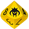

Un nœud trihnique est un point de confluence où de nombreux Trihns en transit convergent avant de retourner vers leurs mondes respectifs. Certains nœuds sont répertoriés et constituent des destinations de pèlerinage car on y a vu des manifestations miraculeuses comme des maladies incurables soignées, voire des morts ressuscités, même si cela reste exceptionnel. De nombreux pèlerins viennent simplement au contact de ces nœuds pour s’y harmoniser et décupler leurs capacités.
Les miracles trihniques
Les effets produits par les nœuds trihniques sont très variables, du simple Bonus pour certains types d’actions tant que l’on reste dans la zone, au gain de points d’Expérience, en passant par l’augmentation permanente d’un niveau de Domaine, voire l’acquisition de Pouvoirs. Il est possible d’imaginer tout un tas d’autres prodiges et les exemples abordés ici n’ont pas vocation à être exhaustifs. La seule règle d’or, c’est que l’effet d’un nœud trihnique ne fonctionne qu’une fois pour une personne. Même si vous êtes libres de provoquer les effets que vous souhaitez pour alimenter votre scénario, voici un petit système de création de miracles trihniques que vous pouvez utiliser dans vos parties.
L’arbre qui cache la forêt (page 34)
